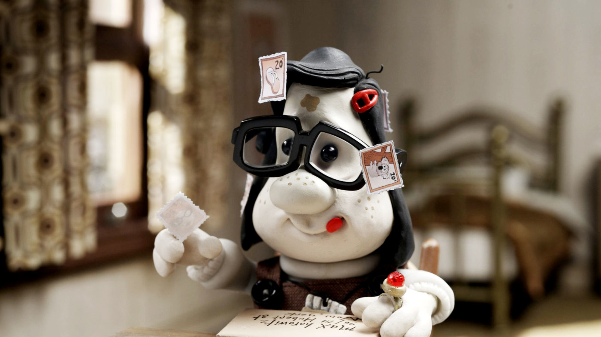
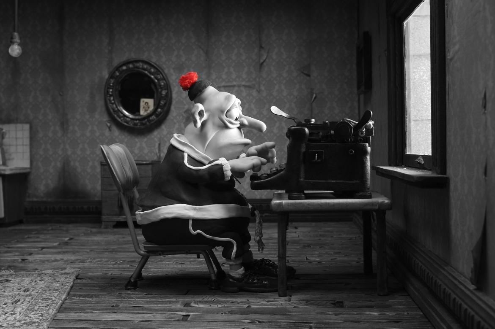
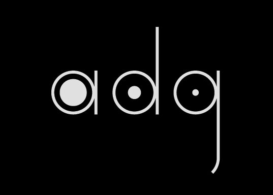

Sinopse
"Mary and Max - Uma Amizade Diferente" é um comovente filme de animação em stop-motion que narra a improvável amizade entre Mary, uma menina solitária de oito anos na Austrália, e Max, um homem de meia-idade com Síndrome de Asperger em Nova York. Através de cartas, eles compartilham suas vidas, medos e alegrias, explorando temas como solidão, amizade, diferenças e aceitação. A animação em tons de cinza e o humor peculiar criam uma atmosfera única que cativa o público, enquanto a história aborda temas complexos com sensibilidade e profundidade. Prepare-se para se emocionar com essa jornada de amizade que transcende a distância e as diferenças.
Personagens
Mary Dinkle
Uma criança curiosa e solitária, Mary busca respostas para suas perguntas sobre o mundo e a vida em geral. Ela encontra em Max um confidente improvável, com quem compartilha seus medos, alegrias e descobertas ao longo dos anos. Mary é marcada por sua inocência, sua franqueza e sua busca por conexão humana.
Max Horowitz
Um homem introvertido e metódico, Max enfrenta os desafios da Síndrome de Asperger em um mundo que muitas vezes não o compreende. A amizade com Mary lhe oferece um refúgio e um propósito, permitindo que ele expresse suas emoções e pensamentos de forma autêntica. Max é um personagem complexo e cativante, que nos ensina sobre empatia, aceitação e a importância das conexões humanas, mesmo que à distância.
Diretor
Adam Elliot é um talentoso cineasta e animador australiano, reconhecido por seus filmes em stop-motion com narrativas tocantes e personagens peculiares. Seus trabalhos, como "Mary and Max" e o vencedor do Oscar "Harvie Krumpet", exploram temas como solidão, amizade e aceitação com sensibilidade e humor. Elliot é conhecido por sua animação detalhada em tons de cinza e seu estilo narrativo único, que cativa o público e o leva a refletir sobre a vida e as relações humanas. Sua obra é marcada por uma combinação de humor sombrio e emoção genuína, criando uma experiência cinematográfica inesquecível.
- 
- 
- 